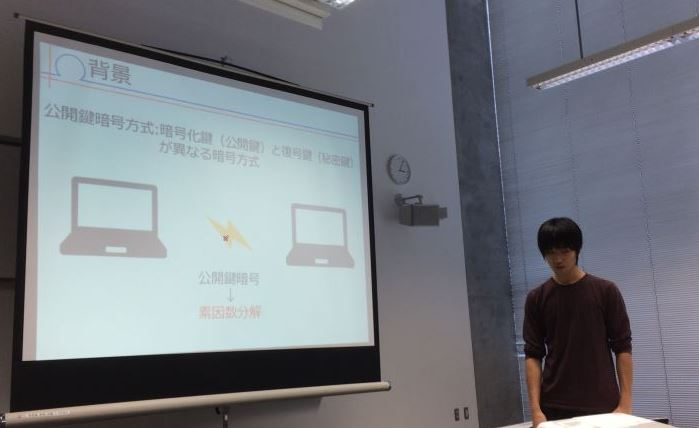

後期活動
9月,10月
後期の活動が始動した。理論班は、広報班としてFUN-ECMの活動発信のためのWebページを作成する班と、引き続き理論班として改良されたプログラムが実際にどれくらい早くなったのかを検証する班に分割した。
理論班は、昨年度のプログラムとの比較方法を考えた。いくつかの検証方法を調査し、問題が発生しない適した方法を探した。 プログラム班は、前期で理論班が発見したAtkin-Moraine ECPPアルゴリズム等をプログラムに取り入れるなど高速化のための実装を引き続き行った。広報班ではWebページを1から作るということで、 初めにページコンテンツの草案を考えた後、html,css,githubなどについて学習をしながらWebページを作成した。
11月
プログラム班は今年度の改良を完了し、作成したECMプログラムを検証班に回して、昨年度のプログラムの比較を行った。広報班ではWebページを完成させた。
また、それぞれの班の活動と並行に最終発表に向けての準備を始動した。ポスターの作成やプレゼンに向けた練習を行った。

12月
12/8に大学にて最終成果の発表を行った。最終発表後は最終報告書への準備を行った。
2016年度の成果
プログラム班
昨年度のプログラムから以下の要素の改良に成功した。
- 射影座標を用いた変換コストの削減
- Extended twisted Edwards coordinatesの実装
- 楕円曲線の生成法の変更(乱数の採用)
- スカラー倍算の高速化のための移動窓法
- 理論班が発見したAtkin-Morain ECPPの実装
- Stage2の実装
理論班
論文を読み、Atkin-Morain ECPPがExtended twisted Edwards coordinatesにおいて1.5倍高速化できることが見込めることを発見した。
後期では昨年度のプログラムとの検証を行った。手法と結果は以下のようになる。
検証マシン
- コンパイラ: icc 14.0.1
- OpenMP: 3.1
- CPU: Intel Xeon Phi 5110P(60コア)
- RAM: 64GB（DDR3L-1600 8GB DIMM×8)
検証方法
- 合成数を入力し，実際に素因数分解されるまでの時間を比較する。
- 20〜50桁を5桁刻みで各5回ずつ検証する。
検証結果
- 20桁から30桁では昨年度より素因数分解の速度が遅かったが、35桁以降では最大15パーセントの改善がされた。
| 桁数 | 今年度(min~MAX)[秒] | 昨年度(min~MAX)[秒] | 改善率 |
|---|---|---|---|
| 20 | 3.4~3.696 | 1.689~2.257 | 約-82% |
| 25 | 10.906~11.323 | 8.528~9.513 | 約-25% |
| 30 | 47.165~51.537 | 44.223~47.599 | 約-4% |
| 35 | 177.932~190.253 | 191.348~200.441 | 約+6% |
| 40 | 686.793~693.397 | 711.594~713.633 | 約+4% |
| 45 | 2682.47~2745.112 | 2653.112~2667.896 | 約+0% |
| 50 | 10173.577~10622.231 | 11763.204~11849.030 | 約+12% |
以上より、大きい桁数のとき改善率が正の値であることから、昨年度のプログラムと比べてより大きい桁数で効率のよい処理を行うプログラムになったことがわかった。
広報班
我々の活動を伝えることで楕円曲線についてより多くの人に知ってもらうことを目標として活動した。
後期の半期間を用いて本サイトを作成した。
最終結果
理論班の検証結果から、FUN-ECMの目標としていた昨年度のプログラムに比べ高速化することに成功したが、ECMNETのランクインすることはできなかった。
FUN-ECMは今年で3年目であるが、今年度は新しい活動として我々の活動を外部に発信する活動を行うことができた。